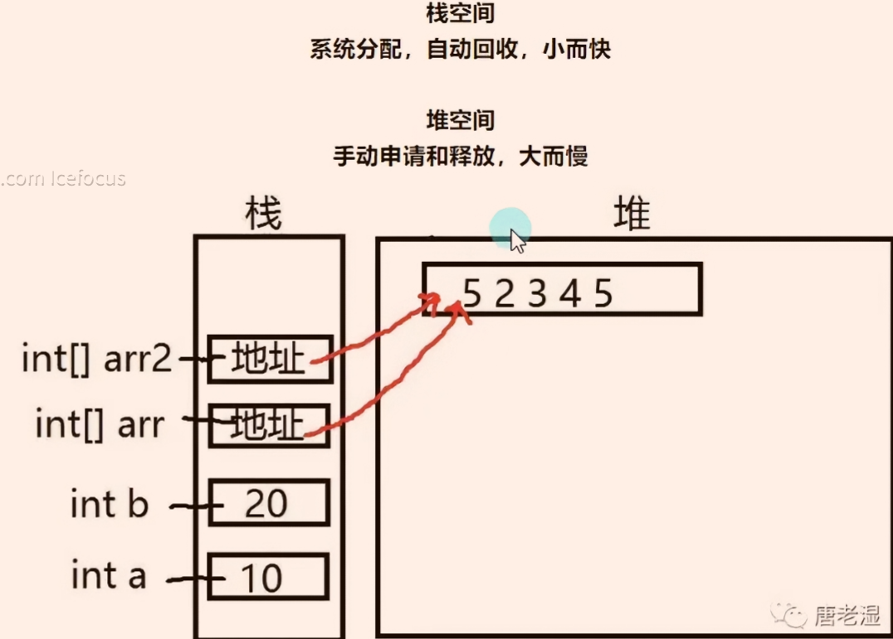

① 复杂的数据类型
💡 01枚举
声明在 namespace 命名空间下面
enum E_class
{
eat,
color,
fight,
// 表示状态，类型，可初始化 默认从0开始， a=2时候，a后面C 为a+1
}
//使用声明的枚举，声明枚举变量
E_class meiJun=E_class.eat;
switch(meijun)//枚举一般搭配switch 语句使用
{
case E_class.eat :
break;
case E_class.color :
break;
case E_class.fight :
break;
}
int number=（int）E_class.eat;
//枚举转int 打印的是枚举对应的序列号
string mei=meiJun.ToString();
//枚举转string 打印的是枚举对应的名字
//string转枚举
meiJun=(E_class)Enum.parse(typeof(E_class),"color");
Enum.parse(typeof(E_class),"color"); 转后后是一个通用的类型
(E_class)强转 需要转换成我们想要的目标类型。
(typeof(E_class) 你要转为的 枚举类型是哪个， "color" 要对应转换的枚举项
游戏开发中，对象类型，状态，用枚举
💡 02 数组
所有变量都能声明为数组 （比如结构体数组）数组是同一类型变量的集合，
一维数组
int[]a
int[]a=new int[5];
int[]a=new int[5]{1,2,3,4,5};
int[]a=new int[]{1,2,3,4,5};
int[]a={1,2,3,4,5}
for(int i=0;i<a.length;i++)
{
//length 获取行长度
}
二维数组
int[,]a={
{1,2,3},
{2,3,4},
{5,4,7}
}
int[,]a=new int[3,3]{
{1,2,3},
{2,3,4},
{5,4,7}
}
for(int i=0;i<a.Getlength(0);i++)
{
for(int j=0;j<a.Getlength(1);j++)
{
//Getlength 0为行长度，1为列长度
}
}
交错数组 数组的数组
int[][]a={
new int[] {1,2,3},
new int[] {2,4},
new int[] {,7}
}
int[][]a=new int[3][]{
new int[] {1,2,3},
new int[] {2,4},
new int[] {7}
}
//交错数组行大小固定，列可不一样② 值类型和引用类型
💡01使用和存储上的区别

值类型 在栈内存上上存储数据和地址 系统回收 占用小 速度快
sbyte,int,short,long,
byte,uint,ushort,ulong
float,double ,decimal,char,bool
enum 枚举
struct 结构体【他变我不变】
引用类型 在栈内存上存储地址，指向 堆内存上存储的数据 手动申请回收 占用大 速度慢
array 数组 (一维，二维，交错)栈上存地址，堆上存数据
【他变我变】
特殊的引用类型string, class,
💡02特殊的引用类型string
string 是 char 的数组化呈现string 进行赋值 相当于 new string 在堆上重新开了个房间；频繁给 string 赋值，会产生内存垃圾，性能降低
③ 函数
💡01函数基础
有参数无返回
static void Cale(int a ){}
无参数无返回
static void Cale( ){}
有参数 有返回
static int Cale(int a,int b){return a+b;}
无参数有返回
string str= static string Name( ){return "welcome";}
有参数，多返回值
static int[] Cale( int a,int b)
{
int sum=a+b,
int avg=sum/2;
//int[] arr={sum,avg};
//return arr;
return new int[]{sum,avg};
}
//使用
int[]array=Cale(4,6);
-----------------------------------💡02 ref和out
ref out 修饰法解决 传入函数的变量在函数内进行运算后，变量值发生改变，函数外的变量也进行改变ref值传递 在函数外初始化，函数能可改可不改，
int a=1;
static void cale(ref a)
{
a+=(a+30)/a;
}
加了 ref 并不会改变 string 的不可变性，修改字符串内容依然会创建新对象；
但 ref 会让方法内部对变量 “引用指向” 的修改，同步到方法外部。out输出传递 不能在函数外初始化，在函数内进行赋值、
💡03变长参数和参数的默认值
//param 可变参数 使用规则 后面接数组，在Main函数中调用时可以直接传递int变量，
static void Cale(params int[]arr)
{
}
//变长参数必须在最后，并且一个函数只有一个变长参数
static void Cale(int a, params string[]arr)
{
}
//参数默认值，可以不传入参数，会执行默认值，
//传入参数就执行传入的参数
static void Cale(string speak=“不想说话”)
{
}
//多个或者一个参数默认值的参数必须在最后
static void Cale(int age,string sex="男",string speak="不想说话")s
{
}
static void Cale( int[]) //在Main函数中调用时必须传入数组参数 new int[]{1.2.3.4.5}
{
}💡04函数重载
函数名相同，参数类型不同 或者 参数数量不同（和返回类型无关）
同类型，同数量的参数 用 out ref 修饰也不能重载
params string[]arr 可变参数（特殊的变量类型）可用于重载
同类型，同数量的参数 下可选参数 string speak=“不想说话” 不能重载💡05递归函数
自己调用自己，
需要了解计算机栈运行规律，方法从顶部进入，方法执行后从顶部抛出，后进先出原则
void Calc(int a)//a传入3
{
if(a==0)
return; //当A等于0时候退出循环
Calc(a-1);//调用自己进行递归，每次循环后a-1
Console.Write(a);//打印A
}进栈 出栈
calc(0) 调用方法满足a==0退出， 然后执行从顶部抛出
Calc(1) 调用方法并传入1 Calc(1) 然后抛出 Calc(1) 并打印a此时的值 1
Calc(2) 调用方法并传入2 Calc(2) 然后抛出 Calc(1) 并打印a此时的值 2
Calc(3) 最先调用方法并传入3 Calc(3) 然后抛出 Calc(1) 并打印a此时的值 3
④ 复杂的数据类型 结构体
结构体是 数据的集合，包含数据和函数，写在 namespace 下。
1.结构体不能 继承类或结构体 和 被继承，可以使用接口
2.结构体是值类型，结构体是不允许写无参构造函数的，
写了有参构造函数（结构体自带的无参构造函数是不会被顶掉的）
3.结构体内的成员变量不允许初始化
5.结构体内的方法或函数必须赋值使用，
6.结构体不用写 static 关键词
struct S1{
int a;
int b;
static int cale(int a,int b){
this.a=a;
this.b=b;}
//结构体的构造函数，进行结构体内的数据初始化，构造函数可以重载
public s1(int a,int b)
{
this.a=a;
this.b=b;
}
1没有返回值
2必须要有参数
3函数名必须和结构体同名
4申明了构造函数那么必须对其中的所有变量初始化
}
S1[]array=new S1[10]；结构体数组⑤ 排序算法
💡01 冒泡排序
用于位置 两两交换排列，升序排列，降序排列
💡02 选择排序
用于位置中 指定（最大，或者最小）放入指定位置（第一个位置或着最后一个位置的）排列，
升序排列，降序排列